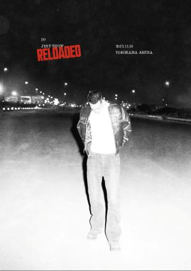
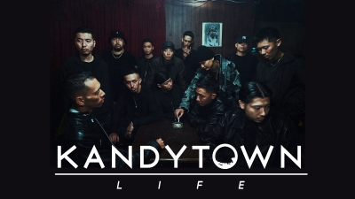

好きなアーティスト（Hip Hop）
kohjiya
長崎県出身のラッパー。名前の由来は地元の名前の麴屋（こうじや）町を英語表記したもの。ラップスタア2024で優勝し、今も熱いラッパー
2026年6月1日と2日に武道館2Days講演を開催!!
有名な曲「DREAMIN’ BOI ISSUE」「 Champions 」「 DNA feat.Kohjiya,PUNPEE」
個人的に好きな曲「 Back Home 」「 Waht I Do 」「 Ma Boyz(feat.MIKADO, G-kid & Tete) 」 「 Life Is Not Automatic 」「 10toes 」

IO
東京都世田谷区出身のラッパー。名前の由来は本名、松本衣央（いお）からきている。KANDYTOWNに所属していたが、現在は解散している。ラップスタア2021で審査員を勤めていた。その他に、モデルとしても活躍しており、シンプルなファッションも好んでおり、着こなしがかっこいい。
個人的に好きな曲 「 Kidy 」「 Your Breeze(feat.Yo-sea) 」「 AMIRI DENIM 」 「 Spotlight(feat.Kohjiya&Tete) 」「 SWEE - Ride remix(feat.IO) 」
KEIJU（旧YOUNG JUJU）
東京都世田谷区出身のラッパー。名前の由来は本名の啓寿からきている。KANDYTOWNに所属していたが、現在は解散している。リリックには、家族や仲間などのワードが多く登場し、深い結びつきが感じられます。
個人的に好きな曲「 清水翔太 - Drippin’ (feat.IO & YOUNG JUJU) 」「 alone 」 「 tofubeats - LONELY NIGHTS feat.YOUNG JUJU」

KANDYTOWN
東京都世田谷区のHIPHOPクルーで、メンバーの多くが「K」から始まる町（喜多見、経堂、駒沢など）の出身だったことから「K-TOWN」とふざけて呼んでいたことが名の由来とされています。2023年3月の日本武道館公演をもってクルーとしての活動を終演しました。解散した今も個人で活躍しています。
個人的に好きな曲「 Song in Blue (remix) 」「 His Game 」「 Local Area 」「 You Came Back」